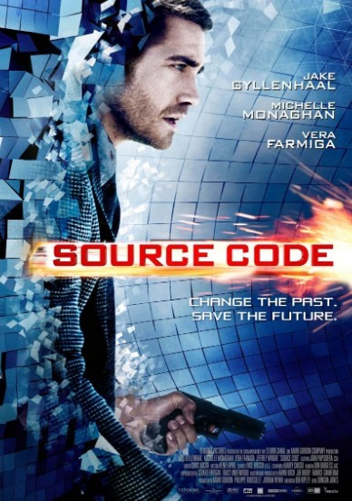

과학 소재 영화들을 소개합니다
영화를 골라보세요!

줄거리:도시를 위협하는 열차 폭탄 테러 사건 해결을 위해 호출된 콜터 대위.
시공간 이동 시스템인 ‘소스 코드’로 과거에 접속해 기차 테러로 희생된
한 남자의 마지막 8분으로 들어가 폭탄을 찾고 범인을 잡아야 하는 임무를 부여 받는다.
이 임무가 성공해야만 6시간 뒤로 예고된 대형 폭탄 테러를 막아 미래를 구할 수 있다.
그는 모든 직감을 이용해 사건의 단서와 용의자를 찾아야 하는데…… (출처-다음영화)
과학적인 요소: 영화 속 배경에선 소스코드라는 시공간 이동 프로그램을 이용해 과거로 돌아간다.
이 때 소스코드에 쓰인 양자역학과 소스코드라는 단어가 컴퓨터 소프트웨어로부터 출발되었다는 점이 영화에서 발견할 수 있는 과학적인 부분이다.